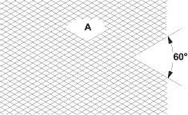

Only a scored or scratched cylinder bore must be honed.
- Measure the cylinder bores (see page 7-16).
If the block is to be reused, hone the cylinders and remeasure the bores.
- Hone the cylinder bores with honing oil and a fine (400 grit) stone in a 60 degree cross-hatch pattern (A). Use only a rigid hone with 400 grit or finer stone such as Sunnen, Ammco, or equivalent. Do not use stones that are worn or broken.

- When honing is complete, thoroughly clean the engine block of all metal particles. Wash the cylinder bores with hot soapy water, then dry and oil them immediately to prevent rusting. Never use solvent, it will only redistribute the grit on the cylinder walls.
- If scoring or scratches are still present in the cylinder bores after honing to the service limit, rebore the cylinder block. Some light vertical scoring and scratching is acceptable if it is not deep enough to catch your fingernail and does not run the full length of the bore.